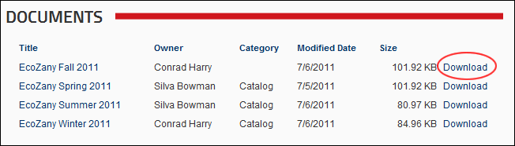

Downloading a Document
How to download a document from the Documents module to your computer. Note: The Download column must be visible to perform this task.
- Click the Download link located beside the required document.

- Open or save the document to your computer as desired.